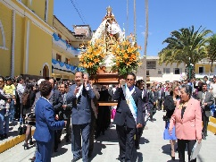
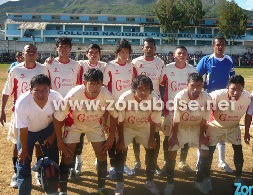
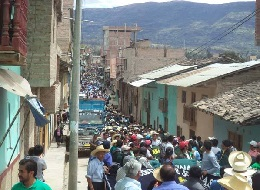
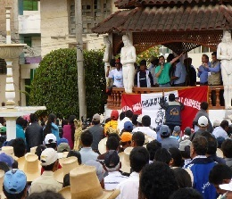
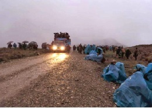

En sesión ordinaria de Concejo de la Municipalidad Provincial de Hualgayoc – Bambamarca
El Comité Central quedó conformado de la siguiente manera: Presidente, Sr. Hernán Vásquez Saavedra; Vicepresidente, MV. Nelson Plasencia Obando; Secretario, Prof. Ketty Cerdán Vásquez; Tesorero, Sra. Marivel Dávila Zárate; Protesorero, Prof. Nelly Coronado Izquierdo; Coordinador General; Prof. Silvestre Bautista Cubas; Primer vocal; Prof. Audias Vásquez Huamán; Prof. Oscar Mejía Horna y Prof. Joel Ramírez Lozano.
En tanto, la Comisión de Espectáculos Taurinos, lo preside Hernán Vásquez Saavedra; Comisión de Prensa y Propaganda, Señor Melvin Campos Altamirano; Comisión de Cultura, Prof. Silvestre Bautista Cubas; Comisión de Asuntos Campesinos, Dra. Yeni Valiente Vásquez; Comisión de Asuntos Sociales, Prof. Nelly Coronado Izquierdo.
Asimismo, Comisión de Deportes, MV. Nelson Plasencia Obando; Comisión de Albazo, Prof. Audias Vásquez Huamán y Comisión de Asuntos Religiosos, Prof. Kety Cerdán Vásquez.
Al momento, la Comisión de Espectáculos Taurinos, cerró trato por 22 astados de las ganaderías colombianas Vistahermosa, Juan Bernardo Caicedo y Mondoñedo, ganado con edad, peso y trapío, tal como lo exige la plaza y la afición bambamarquina.
Noticias sobre la fiesta patronal
La fiesta patronal en honor a la Virgen del Carmen Patrona de Bambamarca se desarrollara las actividades del 14-22 de julio del 2014.
.jpg)
El "Coso Taurino" esta totalmente renovado para los proximos eventos que se desarrollaran para la fiesta patronal. atm Municipalidad de Hualgayoc-Bambamarca
El Volante de Bambamarca Jugara un Duelo ante Alianza Lima el 18 de Julio del 2014 el cual de desarrollara con todas las medidas de seguridad.
Mas Noticias...Conflicto-"Conga"
Imagenes de lo sucedido
En el reinicio de la movilizaciones en contra del mega proyecto minero Conga el pueblo de Bambamarca se volcó masivamente a las calles de esta provincia, demostrando una vez más que este proyecto minero de la transnacional Yanacocha, no cuenta con licencia social y que al contrario goza del total repudio de la población. También se anunció que el 17 y 18 de abril la provincia de Bambamarca retomará el campamento de los guardianes de las lagunas en el sector de la laguna Mamacocha.
El dirigente celendino Milton Sánchez también informó que la provincia de Celendín, por acuerdo de las asambleas comunales del 31 de marzo saldrán masivamente el día de mañana 8 de abril hacia la laguna Azul y Perol. También informaron que realizarán una movilización frente a la persecución judicial que vienen sufriendo dirigentes y comuneros que se oponen a la ejecución del proyecto Conga.